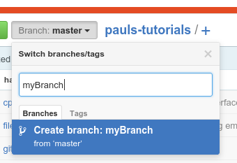

2-3Branching2-3Branching
2-3Branching2-3BranchingBeing one of git's core features, being able to handle branches is an incredibly important skill to have. If done properly, it can greatly enhance a group's efficiency when working on a new project.
Creating a new branch is quite easy, and there are a number of ways to do it. However, there are a few important things to understand about branching first.
When you create a new branch, you are deliberately causing the repository's history to diverge. This is great if you want to work on a new feature for your code, you are working on some sort of side project, or you don't want to interfere with the main stream of development. However, if you are just working on a simple fix, creating a whole new branch can be a little too much. If you let the main stream of development diverge too much from your branch, you will end up with merge conflicts when you ultimately do decide to merge your branch back.
When you make a new branch, keep the name short and simple. Make sure that it accurately describes the purpose of the branch, so that it really isn't necessary to inspect the code on the branch to figure out what you're doing.
Of the two options that you have, this one is the simplest of the two.
When you create a new branch locally, by default,
the HEAD pointer of the new branch will point to the HEAD commit of the branch you were on when you gave git the branch command.
If you want to branch from a specific commit, then you have to tell git the commit you wish to branch from.
If you have a GUI, this function is probably embedded in its branch switching feature.
Open the Switch branch
or Checkout
dialog and look for a New branch
option.
At some point, it will ask you what you want the branch to be named, and it will likely ask you where you want to push it on the remote repository.
In the latter event, you will want to tell git to set up a new branch on the remote of the same name, so there is no confusion later.
At any rate, when you finish with the dialog, your tool will usually switch to the new branch for you, and you can start working on the new branch.
If you want to create the new branch from another commit or branch, you will have to tell git the source in the dialog
(the option will probably be labeled Source
or Branch from
).
If that option only lists branches, you can try typing in a commit hash, if there is a field there for you to type in.
With the commandline, you have a few options to create a new branch.
The first is simply to create the new branch. This will create the new branch, but you will remain on the branch that you were on before you entered the branch command.
This can be done with git branch:
git branch myBranch
Furthermore, the branch command can be used to branch from a specific branch or commit:
# Branch from commit
git branch myBranch 845da8b
# Branch from existing branch 'myBranch' to 'myOtherBranch' while on a different branch
git branch myOtherBranch myBranch
The second option is to create a branch and then immediately switch to the new branch.
This is done with the -b switch of the git checkout command.
With the -b switch, git checkout's syntax is practically identical to that of git branch:
# Branch from the current HEAD and switch to the new branch
git checkout -b myBranch
# Branch from commit 845da8b and switch to the new branch
git checkout -b myBranch 845da8b
# Branch from branch 'myBranch' to 'myOtherBranch' and switch to it
git checkout -b myOtherBranch myBranch
With any of these commands, git will create the new branch and then immediately switch to it.
When you create a new branch locally, you still need to push it to the remote repository. However, this is an incredibly simple operation to perform.
If you have a GUI, just push like you normally would (no commit necessary). There may be some configuration steps involved, but the defaults should be fine. That's it.
If you are using the commandline, you also just push like you normally would, just adding the -u switch to have git set up the tracking information:
git push -u origin myBranch
It is also possible to use the GitHub web interface to create a new branch. However, it does involve some extra steps to get the branch on your local copy.
Creating a branch on GitHub is quite similar to the process for a local GUI. Just open the branch selector, and type the name of the branch you want to create. and hit enter.
If you want to branch from a specific branch or commit, you need to be browsing the repository under that branch or commit.
To browse the repository at a specific commit, click on the Commits
link in the info box, find the commit you want to branch from and click on it,
and then click Browse files
in the upper right-hand corner of the commit digest. This will bring you back to the root of the repository. The branch selector should now
read Tree: xxxxxxxxx
, where xxxxxxxxx is the first 9 characters of the commit hash.
Once you have created the new branch, you need to pull it down.
If you are OK with pulling (i.e. there is nothing on the server that you don't want yet — this stands for any branch), then you can just do a pull. For commandline users, you need to do a generic pull by leaving off the remote and ref name:
git pull
However, if only want to grab the new branch, then the process is a little different.
First, perform a fetch. This will update git's remote-tracking branches (and thus fetch the new branch).
Secondly, you need to create a new branch from the proper remote-tracking branch.
In the GUI, you will want to select the proper branch under the Source
or Branch from
option.
In the commandline, just use the process described above, and just use your source as the right remote-tracking branch.
# Create a branch without checking it out
git branch myBranch origin/myBranch
# Create a branch and check it out
git checkout -b myBranch origin/myBranch
It is useful to know what branch you are on, so you know you are developing in the right place.
Most GUIs will show this information to you quite readily, however, this depends on the implementation.
Most IDE git plugins (such as EGit or the Qt Creator git plugin) will display the branch right next to the project root in the project explorer.
TortoiseGit displays this information alongside the Commit option (it says Git Commit → 'branch'
).
If you remember back to the git status message from lesson 2-1, the very first line shows you the current branch:
On branch git-tutorial
| ← 2-3 Revising History | 2-2 Revising History | 2-4 Resolving Merge Conflicts → |